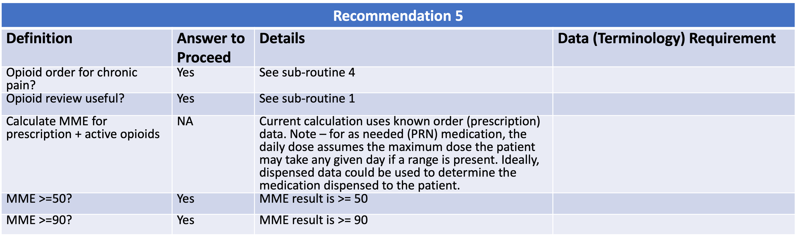
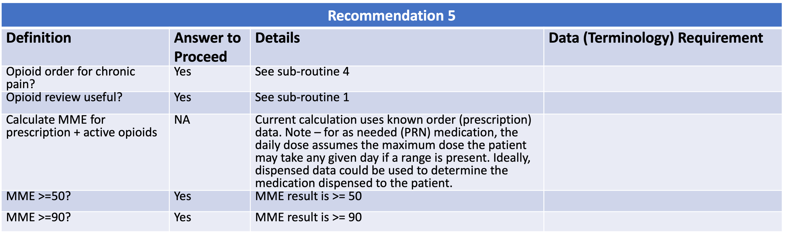
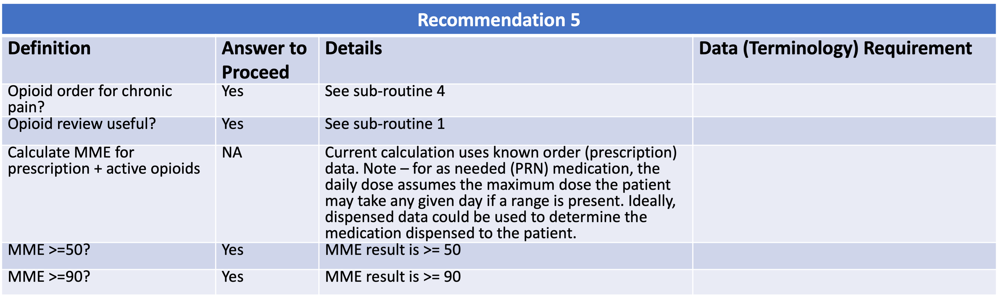

When opioids are started, providers should prescribe the lowest effective dosage.
Providers should use caution when prescribing opioids at any dosage, should carefully
reassess evidence of individual benefits and risks when considering increasing dosage
to ≥50 morphine milligram equivalents (MME)/day, and should avoid increasing dosage
to ≥90 MME/day or carefully justify a decision to titrate dosage to >90 MME/day
(recommendation category: A, evidence type: 3).
8.7.1 Functional Description
{% include recommendation05-functional-description.html %}

For Chronic Pain
{% include for-chronic-pain-definitions.html %}
Opioid Review Useful
{% include opioid-review-useful-definitions.html %}
Opioid Naive
{% include opioid-naive-definitions.html %}
Opioid Review Useful
{% include opioid-review-useful-definitions.html %}
8.7.2 Content
The following artifacts formalize the description of the logic and behavior defined by this recommendation.
 
